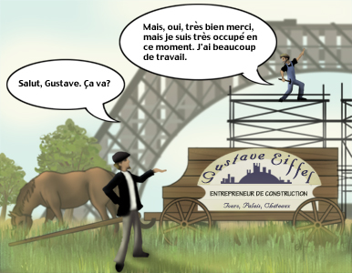

Préparation 1
On Commence Par Bonjour
Introduction
The basic building blocks of any language are its sounds. Learning to pronounce a language accurately not only helps you to be understood, but also makes you aware of sounds and meanings so you can understand others. Every language is different and has its own complexities. French has a sound system that is very different from that of English, yet the French and English languages have a lot in common. Listen to the following conversation between two French people. If you have never studied French, what you hear will seem like a jumble of strange sounds uttered at an incredible speed.
English vs. French
French Sounds
It may be difficult to believe, but the conversation you just heard contained many words that are similar to English equivalents in spelling and meaning. You probably didn’t recognize these words because the French sound system is so different from the English one. Once you have studied the sounds of French, the conversation you just heard will become more accessible to you.
Listening to similar words in the two languages will help you become aware of the differences in their sound systems. Listen to the following pairs of shared words. Can you hear a difference in the way words are stressed? In particular, can you hear the difference in the way the vowels are pronounced?
Comparing English and French
As a result of their shared history, the English and French languages share many characteristics. When the Duke of Normandy, known as William the Conqueror, won the Battle of Hastings in 1066, England fell under the domination of the Normans, and Norman French, the dialect of Normandy, became the language of the court, the educational system, and the administration. French words flooded into the English language and the English vocabulary became distinct from the vocabularies of other Germanic languages such as Dutch, Swedish, or German, which borrowed far less extensively from French.
This intermingling of English and French early in the 11th century explains why many words look the same today. However, they rarely sound the same. Stress in English is achieved through an increase in volume. In the English word bureau, the first syllable is louder than the second. In French, the last syllable is made louder to achieve emphasis. In French, stress results from an elongated vowel sound in the final syllable of the word and is always on the last syllable of a phrase. Listen to the pairs again, paying careful attention to stress and to the sounds of the vowels.
Stress has a lot to do with how vowels sound in the two languages. In English, stressed vowels are longer than unstressed vowels. The word chocolate offers a good example. The second o disappears and the a becomes an indistinct sound, something between the i of bit and the u of but. In the French word chocolat, each of the three vowels is distinct. Listen to the pairs again, paying careful attention to the differences between the vowels of the two languages.
Pronunciation Practice 1
Here are some French culinary terms whose meanings should be easy to recognize. Pronounce each of them after the speaker. Make the vowels short and keep the muscles of your mouth and jaw tense. Can you guess what each word means? Listen to the following list of words.
- appétit
- salade
- sardine
- sautée
- vinaigre
- pêche
- soufflé
- dîner
- mousse
- moutarde
- biscuit
- soupe
- figue
- sauce
French Vowels and Consonants
Vowels are very important in French and their pronunciation requires much more muscle than English vowels. The next part of Préparation 1 will examine French vowels and provide pronunciation exercises.
Vowels
The letter a in French represents a sound close to the a of class in standard American English. Example: salade, sardine, appétit
The sound spelled é in French represents a vowel close to the ai of English bait, but shorter and tenser, with no y-like glide. It is sometimes written er at the end of a word. Example: sautée, dîner, soufflé, appétit
French has a vowel close to the e of English bed. This sound is spelled in various ways in French, among them ai, ê, è, and ei. Example: vinaigre, pêche
The letter i represents a vowel close to the i of English machine, but shorter and tenser. Note that the letter i never represents the sound of i in English bit. Example: sardine, appétit, figue, biscuit
The sounds spelled au or o in French represent a vowel close to the oa of English boat, but shorter and tenser, with no glide at the end. Example: sautée, sauce
Often in the interior of a word the letter o represents a vowel close to the au of English taught. This sound is called open o. Example: chocolat
The letters ou represent a vowel close to the oo of English food, but shorter and much tenser. Example: mousse, moutarde, soupe, soufflé.
Nasal Vowels
French also has three nasal vowels.
One is a sound similar to the o of hot in standard American English. Examples: agent, champagne
The second is a sound similar to the oa of boat. Examples: station, coton
The third is a sound similar to the e of bed. Example: bassin, soudain
French Consonants
Vowels are not the only new sounds you will be learning to pronounce. French uses some of the consonants we use in English to produce certain distinct sounds:
In French, the letters ch represent a sound similar to the sh in English short. Like most French consonants, this sound is pronounced with more tension of the articulatory muscles than its English counterpart. Examples: champagne, chocolat, pêche
In French, when the letters j or g appear before the vowels e and i, they represent sounds similar to the s in English pleasure. Like French ch, this sound is pronounced with more tension of the articulatory muscles than its English counterpart. Examples: agent, jeter
Pronunciation Practice 2
Listen to the following French words that have become part of the English language.
- champagne
- agent
- centre
- station
- coton
- bassin
- soudain (sudden)
Note that nasal sounds in French spelling are almost always followed directly by an n (or sometimes m) when the n (or m) itself is directly followed by a different consonant. This is also true when the n or m is the last letter of a word.
Pronunciation Review
Let's review the sounds we have learned by practicing some familiar material. As explained earlier many French phrases and expressions have also made their way into English. With what you now know about French sounds you should be able to pronounce these familiar words and phrases the way the French do. Repeat each one after the speaker. There will be two repetitions of each.
| French | English |
|---|---|
| C'est la vie. | That's life. |
| C'est la guerre. | That's war. |
| Bon voyage. | Have a nice trip. |
| Bon appétit. | Enjoy your meal. |
| nom de plume | pen name |
| nom de guerre | pseudonym |
| un je ne sais quoi | a certain something |
| sans souci | carefree |
| Au revoir. | Good-bye. |
| Adieu. | Farewell. |
| Vive la différence! | Hooray for the difference. |
Sounds Unique to French
Some of the French expressions that you have just repeated include new sounds that are common in French but nonexistent in English. Read the explanations below and listen to these words and phrases again:
The letter u, in French spelling, represents a vowel that is pronounced by keeping your tongue in position for [i] but saying [u]. In other words, you round your lips while keeping your tongue high in the front of your mouth. Example: nom de plume
The letters eu represent a vowel sound that is pronounced by keeping your tongue in position for [e] but saying [o], in other words, you round your lips while keeping the tip of your tongue at mid-height in the front of your mouth. Example: adieu
French also has a vowel that is a more open version of the vowel represented by eu in adieu. This vowel is pronounced like the e of bed, but pronounced with rounded lips. This sound is represented either by e or by eu in French spelling. When it is represented by e it may be unpronounced in certain positions. When represented by eu, it is never unpronounced. Examples: nom de plume, nom de guerre, un je ne sais quoi
Did you notice that in un je ne sais quoi, this sound, called mute e, is not pronounced in the word ne?
Listen Again
Now listen again to the introductory conversation between two French people. What are they talking about? What specific items do they mention? Is your impression of normal spoken French any different now from what it was when you heard this conversation for the first time?
Learning to Speak French
Learn to Speak French by Speaking French
Engaging in conversations of increasing complexity is the best way for you to learn how to use French in real-life situations. To begin, let’s learn how people of college age say hello to each other in an informal situation. As you practice the sentences of the Conversations in Préparation 1, keep in mind what you have learned about French vowels and consonants. Listen and repeat the phrases. Remember, you can click on any sentence to go to the Analyse section where you will find a breakdown and analysis of the elements of the sentence. In the Analyse sections, all words, phrases, and sentences are given in French and English.
How to Proceed
- Listen to the entire conversation.
- Listen to the conversation sentence-by-sentence, studying the Analyse section as you listen. Concentrate first on the sounds.
- Listen to the conversation again, concentrating on the meaning of the different words and phrases that make up the conversation.
- In the pauses provided, repeat each sentence after the speaker. This should be done over and over until you are comfortable with each sentence.
Conversation 1
Situation: Two friends, Christine and Pierre, run into each other at the university.
Need help? Click on each sentence for a detailed analysis.
Christine
Bonjour, Pierre!
Pierre
Tiens! Salut, Christine. Ça va?
Christine
Oui, très bien, merci. Et toi?
Pierre
Bien, merci, mais j'ai beaucoup de travail.
Christine
Moi aussi, je suis très occupée en ce moment.
How to Learn and Practice the Conversation
- Perform the conversation with the actors by replying to the lines rather than repeating them.
- Act out the conversation with a classmate and use the recording to compare your performance.
- Use the computer to help you learn to write the conversation. Pause the recording after each sentence and write what you hear from dictation. Then check your answers with the text of the conversation.
Langue et Culture 1
French Ways of Greeting
In both formal and informal situations, the most common gesture associated with greetings in French is the handshake. In France, adults and young people who are not close friends usually shake hands each time they meet and say good-bye.
A handshake is also used when one is introduced to someone. The French handshake consists of a light, firm grasp with a slight upward stroke, then one downward stroke — unlike the American handshake, which often includes vigorous pumping up and down.
Among young people a kiss on the cheek or both cheeks is a common greeting. This kiss is called la bise and is used among young adult women of any age who are friends as well as between women and men. In more formal situations a handshake is used instead of the bise.
The two ways to say hello in Conversation 1, bonjour and salut are not entirely interchangeable. Bonjour is appropriate in all situations, whether formal or informal, while salut is colloquial and informal. Salut is common among young people.
Un Peu Plus 1
This section helps you build your vocabulary by substituting new words in the sentences of the conversation. Material in this section should be learned as thoroughly as the material in the conversations. Your goal should be to commit this material to memory, so that you can supply the French sentences for each of the English ones. The material in this section includes only common French given names.
Pronunciation Practice 3
Liaison
Final consonants in French words are usually not pronounced:
- tiens
- salut
- beaucoup
- moment
- très
However, in many cases, when the next word begins with a vowel, the final consonant is pronounced, but as part of the following word.
The syllable zo comprises the final consonant of très and the initial vowel of occupée. When the final consonant of one word is joined to the initial vowel of the following word to form a single syllable, this is called liaison, which means linking. In liaison, Note that the s of très, which is usually silent, in liaison is pronounced like the z of zoo.
Writing Exercise 1
Complete the following sentences by using what you have learned in Conversation 1. Click on the underlines to see the correct answers.
-
J'ai
de travail.
_________
beaucoup -
Salut! Ça
?
_________
va -
Très bien, merci. Et
?
_________
toi -
Moi
.
_________
aussi -
en
moment
_________
ce -
Je
très occupée.
_________
suis
Conversation 2
Situation: Christine introduces her friend, Nicole, to Pierre.
Christine
Pierre, je te présente ma copine, Nicole Jarry.
(Nicole and Pierre shake hands.)
Pierre
Enchanté. Je m'appelle Pierre Fortier.
Nicole
Enchantée, Pierre.
Christine
Bon, pardon, Pierre. Nous sommes pressées.
Pierre
Moi aussi, j'ai cours.
(They shake hands as they say good-bye.)
Nicole
Au revoir, Pierre.
Pierre
Au revoir, Nicole. Salut, Christine.
Need help? Click on each sentence for a detailed analysis.
Un peu plus 2
Writing Exercise 2
Use the phrases you've learned on this page to complete the sentences below. Click on the underlines to see the correct answers.
-
Je te
ma copine.
_________
présente -
Nous
pressés.
_________
sommes -
À tout à
.
_________
l'heure -
Moi aussi,
cours.
_________
j'ai -
Tu
en retard?
_________
es -
Enchanté. Je
Pierre Fortier.
_________
m'appelle
Pronunciation Practice 4
Now let's practice French vowels and the rhythm of French sentences. Repeat the following phrases after the speaker. Don't worry about the meaning of the phrase. Concentrate on making each vowel clear and each syllable the same length. In each case you will hear a build-up of syllables. Notice that French sentences consist of a series of syllables of the same length, as opposed to English sentences, where stressed syllables are much longer than unstressed ones.
Vowel Practice: a
- salade
- la salade
- moi la salade
- à moi la salade
Vowel Practice: e
- bébés
- ces bébés
- Séchez ces bébés.
- et séchez ces bébés
Vowel Practice: i
- ici
- finit ici
- qui finit ici
- dis qui finit ici
Vowel Practice: o
- poteau
- au poteau
- saute au poteau
- Jojo saute au poteau.
Vowel Practice: u
- cru
- du cru
- bus du cru
- Tu bus du cru.
Vowel Practice: eu
- peu
- veut peu
- gueux veut peu
- Le gueux veut peu.
Writing Exercise 3
Review the list of phrases below. Then indicate which phrase you would use to accomplish each of the tasks in the six question boxes that follow by clicking on the correct word or phrase.
Which expression would you use to say your name?
Which expression would you use to ask how a friend is doing?
Which expression would you use to greet someone to whom you have just been introduced?
Which expression would you use to respond to someone who has asked you how you are?
Which expression would you use to say good-bye?
Which expression would you use to greet someone?
Conversation 3
Need help? Click on each sentence number for a detailed analysis.
Micheline Féret
Bonjour, Monsieur.
Guy Durocher
Bonjour, Madame. Je suis Guy Durocher.
Micheline Féret
Ah, vous êtes le conseiller en gestion. Je suis Micheline Féret.
(They shake hands.)
Guy Durocher
Enchanté, Madame.
Micheline Féret
Je suis très heureuse de faire votre
Guy Durocher
Merci, Madame.
Note on Liaison
Notice that Conversation 3 has two cases of liaison of [s] as [z]: vous êtes and très heureuse.
Langue et Culture 2
French Ways of Greeting (2)
Notice that in formal situations courtesy titles (Monsieur, Madame, Mademoiselle) are used. In America, people use the family name after the courtesy title (Mr., Mrs., Ms., etc.): Good morning, Mrs. Smith. In France, however, the courtesy title is used alone, without the family name: Bonjour, Madame.
In France, two adults who don’t know each other very well always use courtesy titles. For instance, in a store the salesperson and the client would say Bonjour, Madame. In America, it is perfectly proper for a child to greet an adult by saying Hi! or Hello! In France, a child or a young adult greeting an older person who is not a relative is expected to use a courtesy title: Bonjour, Mademoiselle.
Notice how many times the courtesy titles are used in Conversation 3. Sentences such as Enchanté, Madame or Merci, Madame would sound inappropriate without Madame. In English the equivalent courtesy title would be superfluous in these cases.
Un peu plus 3
I'm very glad to make your acquaintance, Ma'am.
Je suis très heureux de faire votre connaissance, Madame.
I'm very glad to make your acquaintance, Miss.
Je suis très heureux de faire votre connaissance, Mademoiselle.
Structure de la Langue 1: French Accents
Diacriticals
Diacriticals are marks, such as accent marks, that appear with letters. You may have noticed while reading the French words that some French letters used with marks above or below them. These accent marks are part of the spelling and indicate aspects of pronunciation. The four main accents are, with their French and English names:
´ : accent aigu (acute accent)
` : accent grave (grave accent)
ˆ : accent circonflexe (circumflex)
¸ : cédille (cedilla)
Accent aigu
The accent aigu occurs only over the letter e: é. This letter is called é accent aigu. The letter é indicates that the e represents the sound called closed é as in présent, ressé.
Accent grave
The accent grave usually appears over the letter e: è. This letter is called e accent grave. It indicates that the e represents the sound [è] as in très. The accent grave appears over the letter a in the preposition à and over the letter u in the word où, where.
Circonflexe
The circonflexe may appear over any vowel. When it appears over e, the ê is pronounced like the e of English bet. In colloquial French, the circonflexe does not change the pronunciation of the other vowels (a, i, o, u).
Cédille
The cédille can only appear under the letter c: ç. This letter is called ç cédille. The letter ç is pronounced like the s of English soup and is used before the vowels a, o, and u. The letter c without the cédille is pronounced like the c of English cool before the vowels a, o, and u, but like the s of English soup before e and i: merci Nicole, ça, connaissance.
Activité : Accent Exercise
Add the missing accent marks to the following words.
- Helene
- Valerie
- Therese
- enchante
- a tout a l’heure
- Agnes
- Stephane
- Herve
- etes
- tres
Show Answers
- Hélène
- Valérie
- Thérèse
- enchanté
- à tout à l'heure
- Agnès
- Stéphane
- Hervé
- êtes
- très
Structure de la Langue 2: Spoken vs. Written French
You have probably noticed that many French words change their form depending on whether they refer to a man or a woman. Some of these changes are reflected in pronunciation and spelling.
Other adjectives, such as pressé, in a hurry, have changes in form that are reflected in spelling, but not in pronunciation:
The adjective pressé has four written forms: pressé, pressée, pressés and pressées, but only one form in speech.
Now look at the adjective occupé.
How many written forms does the adjective occupé have? How many spoken forms would you guess it has?
Oral Exercise 1
Substitute the elements you hear in order to create new sentences. The speaker will provide the correct response. Repeat each correct response after the speaker.
Modèle
Commençons.
Oral Exercise 2
Substitute the elements you hear in order to create new sentences. The speaker will provide the correct response. Repeat each correct response after the speaker.
Modèle
Commençons.
Oral Exercise 3
Modèle
Commençons.
Lecture

Questions for Students:
- What is being built here?
- Who is the builder?
- Why does the builder say "J'ai beaucoup de travail" ?
Show Answers
- The Eiffel Tower (in French, la Tour Eiffel)
- Gustave Eiffel (1832-1923), the engineer who designed the Eiffel Tower. The Tower, a metal structure, was completed in 1889 and is 320 meters (about 1,050 feet) high. Today the Eiffel Tower is perhaps the most well-known symbol of the city of Paris, but when it was built for the 1889 World’s Fair, it called forth a storm of criticism that condemned it as a blight on the beauty of the city. Today over 170 million people visit the Eiffel Tower each year to enjoy the spectacular views of Paris from the observation deck at the top.
- He is building the Eiffel Tower by himself. The actual construction of la Tour Eiffel employed over 200 workers, half of whom made the iron girders while the other half worked on the tower.
Analyse
This section provides detailed analysis of each element in each sentence you encounter in the Conversations. Use it to help yourself troubleshoot when a word, expression, or spelling looks confusing. The Conversations are presented in order and each numbered sentence corresponds to a numbered sentence in a Conversation you should have already heard.
Analyse: Conversation 1 (1.1 through 1.5)
Analyse: Conversation 2 (1.6 through 1.12)
Analyse: Conversation 3 (1.13 through 1.18)
Petit Vocabulaire
Click to show
- À bientôt.
- Good-bye for now.
- À plus tard.
- See you later.
- À tout à l’heure.
- See you soon.
- ah
- oh
- ai; j’ai
- I have
- appeler; je m’appelle
- to call; my name is
- Asseyez-vous.
- Sit down.
- Au revoir.
- Good-bye
- aussi
- also, too
- beaucoup
- a lot, much
- beaucoup de
- (+ noun) a lot of, much
- bien
- well
- bon
- well, good
- Bonjour
- Hello, good morning
- Ça va?
- How are things? / How’s it going?
- ce
- this
- la connaissance; faire votre connaissance
- acquaintance; to make your acquaintance
- le conseiller
- consultant
- le conseiller en gestion
- management consultant
- la copine
- female friend
- le cours; avoir cours
- course, class; to have a class
- de
- connecting word
- en
- in, at
- enchanté
- delighted; pleased to meet you
- es; tu es
- informal 2nd person singular form of être; you are
- et
- and; what about? / how about?
- êtes
- are (goes with vous)
- la fac; à la fac
- university (colloquial); at the university
- faire
- to make
- la gestion
- management
- heureuse
- happy (referring to a female)
- je
- I
- le (masculine singular)
- the
- ma
- my (refers to a feminine noun)
- Madame
- Ma’am, Ms. (to a married woman)
- Mademoiselle
- Miss
- me
- me, to me, myself (m’ before a vowel)
- merci
- thank you, thanks
- moi
- me, I
- le moment; en ce moment
- time, moment; at this time
- Monsieur
- sir, Mr.
- nous
- we; us, to us
- occupé
- busy
- oui
- yes
- pardon
- sorry, excuse me, excuse us
- presenter; je te présente
- to present; let me introduce you to
- pressé
- in a hurry
- le retard; être en retard
- delay; to be late
- Salut!
- Hi! (more informal than bonjour)
- s’il vous plaît
- please
- sommes; nous sommes
- first person plural form of être; we are
- suis; je suis
- first person singular form of être; I am
- te
- to you; you (object of verb)
- Tiens!
- Well, now!
- toi
- you (stressed pronoun)
- le travail
- work (noun)
- très
- very
- votre
- your
- vous
- you (formal)
- vous êtes
- you are